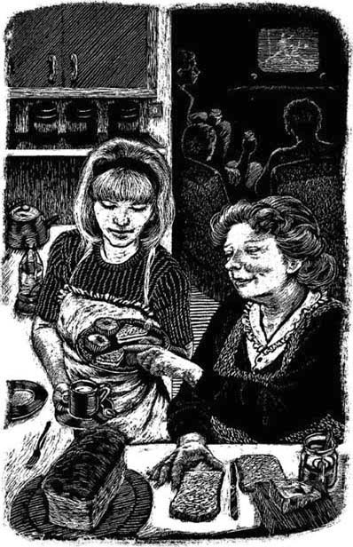

8
Listen to Part 1:

Trận đấu bóng đá
Ngày tiếp theo là ngày diễn ra trận đấu bóng đá lớn. Ông Hart đã mời khoảng mười người. Anna không xem trận đấu. Cô bé đang giúp bà Hart trong bếp. Họ đang pha trà.
Đó là một trận đấu hay và mọi người đều đang tận hưởng nó.
Giữa giờ nghỉ, Peter vào bếp.
‘Sao cậu không vào xem trận đấu, Anna?’ cậu bé nói. ‘Hay lắm đấy. Vào đi!’
Anna cười. ‘Không, cảm ơn,’ cô bé nói. ‘Tớ đang giúp bà Hart. Kia kìa, trà đây. Cậu có thể mang vào cho mọi người không?’
‘Được,’ Peter nói. ‘Đây là một trận đấu tuyệt vời. Mike Bailey đã ghi một bàn thắng tuyệt vời.’
Peter mang trà vào phòng khách và hiệp hai của trận đấu bắt đầu.
Hiệp hai rất hấp dẫn. Mike Bailey ghi thêm một bàn thắng nữa sau hai mươi phút. Tỷ số là 2-0.Sau đó, đội bên kia ghi hai bàn thắng nhanh. Tỷ số là 2-2. Chỉ còn năm phút của trận đấu nữa.

Listen to Part 2:
Anna không xem trận đấu. Cô bé đang giúp bà Hart trong bếp.
‘Cố lên!’ Peter hét. ‘Cố lên, Mike! Tiến lên nào!’
Trong những giây cuối cùng của trận đấu, Mike Bailey đã ghi bàn thắng quyết định. Đó là bàn thắng thứ ba của anh trong trận đấu.
Nhưng có điều gì đó không ổn! Thủ môn của đội kia đã bị thương. Bailey đã ở rất gần thủ môn và anh đã sút bóng rất mạnh. Bóng đã đập vào cổ của thủ môn.
Bà Hart và Anna đi vào từ bếp.
‘Chuyện gì đã xảy ra?’ Anna nói. ‘Sao thế?’
‘Đó là Brian Thomas, thủ môn,’ Peter nói. ‘Anh ấy bị thương rồi.’
Thật nghiêm trọng. Thủ môn đã bị gãy cổ.
Sau đó, tất cả họ đều xem tin tức trên TV. Họ thấy những bức ảnh về bàn thắng thứ ba của Mike Bailey. Đó là một bàn thắng tuyệt vời. Họ thấy quả bóng đập vào thủ môn. Đó là một tai nạn.
Người dẫn chương của TV nói, ‘Và giờ hãy đến với phòng thu thể thao của chúng tôi để phỏng vấn Mike Bailey.’
Listen to Part 3:
Tất cả họ đều theo dõi cuộc phỏng vấn. TV cho thấy hình ảnh của Mike Bailey và người phỏng vấn.
‘Mike,’ người phỏng vấn nói, ‘ba bàn thắng trong một trận đấu! Bạn cảm thấy thế nào về điều đó?’
Nhưng Mike Bailey không nói gì. Anh không thể nói được. Anh cố gắng nói, nhưng không thể. Thật kinh khủng.
Người phỏng vấn thử một câu hỏi khác. ‘Hãy cho tôi hỏi về bàn thắng thứ ba, Mike. Đó là một bàn thắng tuyệt vời. Nhưng bạn cảm thấy thế nào về chấn thương của Brian Thomas?’
Đó là một câu hỏi ngớ ngẩn. Thủ môn bị thương sẽ không bao giờ chơi bóng đá trở lại. Mike Bailey không nói gì. Anh trông rất ốm yếu.
TV cho thấy hình ảnh của Mike Bailey và người phỏng vấn.
Khi cuộc phỏng vấn kết thúc, ông Hart tắt TV đi.
Không ai để ý rằng Anna đã rời khỏi phòng. Mike Bailey trông có vẻ sợ hãi. Anna cũng sợ nữa. Mike Bailey và Anna đã từng gặp nhau trước đó. Ngày hôm trước, tại The Corner Shop.
Mục lục
- Bìa
- Trang tiêu đề
- Trang bản quyền
- Nội dung
- Nhân vật trong truyện
- 1. Người lạ đến Woodend
- 2. Cuộc họp làng
- 3. Tiệm bán tạp hóa
- 4. Vị khách xinh đẹp
- 5. Một trang trong ‘Tin phim’
- 6. Nụ hôn vội
- 7. Một đơn hàng khác
- 8. Trận đấu bóng đá
- 9. Một kỳ nghỉ cuối tuần bí mật
- 10. Một cuộc cãi vã
- 11. Arthur Riseman
- 12. Anna chờ tin tức
- 13. Phòng xử lý đơn hàng đặc biệt
- 14. Những vị khách hàng đặc biệt
- 15. Ngày 31 tháng 10
- Các điểm cần lưu ý